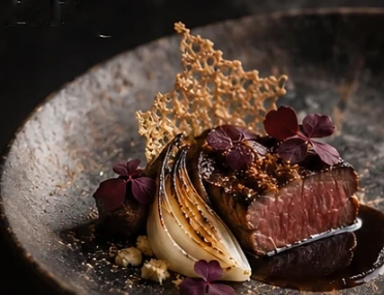
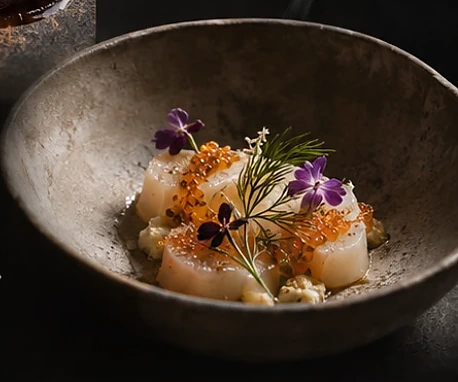
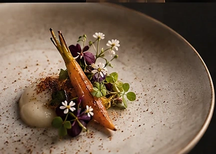

First Light
Oyster, green apple, coastal herbs

A modern fine-dining
restaurant
Seasonal cuisine at the
intersection of craft,
art, and place.
A note from
the chef
Atelier Noir is a space for curiosity, where the seasons guide the menu, technique serves the ingredient, and every dish tells a quiet story of place.
Julien MoreauExecutive Chef

“A masterclass in modern fine dining.”
“Bold, elegant, unforgettable.”
The Atelier Spirit
The dining experience
Atelier Noir is an intimate dining experience that unfolds like a story, rooted in the rhythms of the season, inspired by local producers, and shaped by a spirit of artistic exploration.
From the first bite to the final course, our aim is to create a sense of immersion: flavors that linger, details that surprise, and a feeling of being somewhere entirely your own.
Meet the chef
For Chef Julien Moreau, the most memorable dishes begin with an observation: the character of an ingredient, the turning of a season, the detail others may overlook.
His approach pairs classical discipline with a sense of discovery, allowing each ingredient to speak with clarity and restraint.
JulienJulien MoreauExecutive ChefA table is waiting
For special occasions, quiet celebrations, and evenings without a reason.